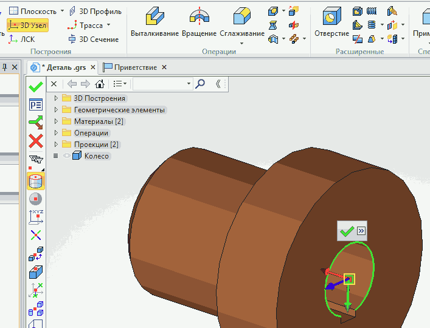

Уберём видимость построенных нами эскизов. Выделим в дереве модели
3D — профили и сделав щелчок ПКМ выберем в меню Видимость — Погасить. Названия погашенных компонентов в дереве модели становятся серого цвета.
Аналогично можно погасить видимость рабочих плоскостей.
Настроим параметры детали. Сделаем двойной щелчок ЛКМ на
Тело1 в дереве модели или щёлкнув по нему ПКМ выберем в контекстном меню ПараметрыИзменим имя тела на Колесо
Изменим материал детали. По умолчанию материал - сталь. Для выбора другого материала надо зайти в окно Материалы, нажав клавиши Alt + 8 или открыв вкладку
Приветствие зайти в Окна и выбрать МатериалыВ открывшемся окне отображаются три библиотеки материалов:
Металлы, Неметаллы, Покрытия. Если окно пустое после щелчка ПКМ выберите
Открыть библиотеку и добавте нужные библиотеки.
Раскроем библиотеку Металлы и выберем нужный материал (например бронзу) и сделаем по ней щелчок ПКМ. В открывшемся меню выберем Применить к модели.
Отметим нужные пункты в появившемся окне и нажмём ОК.
Наша деталь станет бронзовой ...... и в дерево модели добавится бронза
Определим массо-инерционные характеристики детали. Зайдем в меню
Измерение, выберем Характеристики и выделим деталь.
Щёлнем по галочке и в появившемся окне Расчёт. Получим все массо-инерционные характеристики детали.
Создадим новую систему координат (ЛСК), которая нам понадобится для вставки в сборку. Создадим сначала 3D - узел. Запустим команду 3D - узел, а как способ создания выберем
В центре эллиптического ребра
Укажем круговое ребро и щёлкнем по зелёной галочке.

Запустим команду ЛСК, выберем созданный 3D - узел, в параметре
Внешняя зададим На все уровни и щёлкнем по галочке. Параметр На все уровни обеспечивает видимость ЛСК при вставке детали как сборочной единицы в другой чертёж.
Иногда есть необходимость создать 3D - узел в центре тяжести тела. Тогда опять запустим команду 3D - узел, в качестве способа создания зададим В центре масс, выделим тело, щёлкнув по нему и для завершения по галочке.